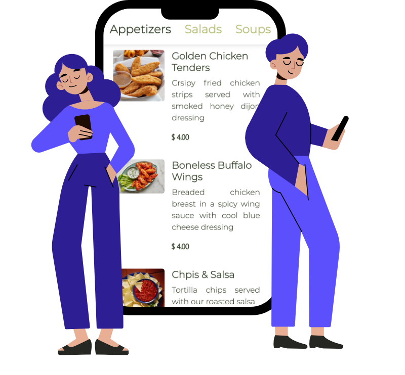

<section id="carouselExampleIndicators" class="carousel slide intro-section" data-bs-ride="carousel">
    <div class="container mt-4">
        <div class="carousel-inner">
            <div class="carousel-item active">
                <div class="row align-items-center text-white">
                    <div class="col-md-6 intros text-start">
                        <h1 class="display-2">
                            <span class="display-2--intro">Digital Menu App</span>
                            <span class="display-2--description lh-base">
                            The fast and easy way to create a digital QR menu.
                          </span>
                        </h1>
                        <a class="rounded-pill btn-rounded" id="getnowbtn" href="https://play.google.com/store/apps/details?id=com.codi.digitalmenu" target="_blank" rel="noopener noreferrer">
                          Get it Now
                          <span>
                            <i class="fab fa-google-play"></i>
                          </span>
                        </a>
                    </div>
                    <div class="col-md-6 intros text-end">
                        <div style="display: flex; justify-content: center;">
                            
                        </div>
                    </div>
                </div>
            </div>
        </div>
    </div>
</section>